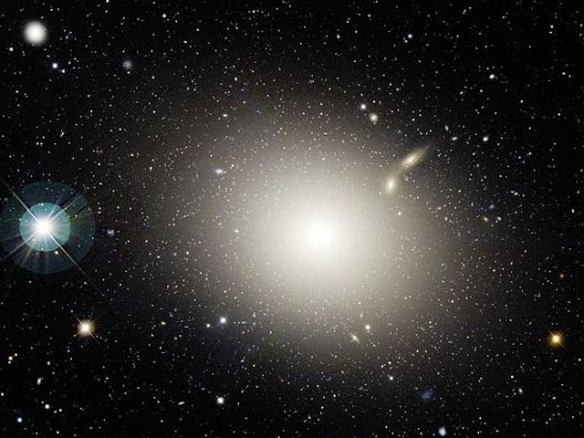
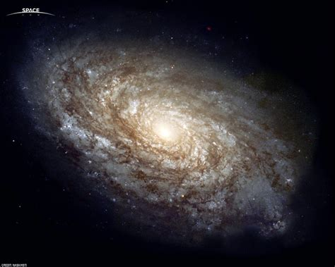
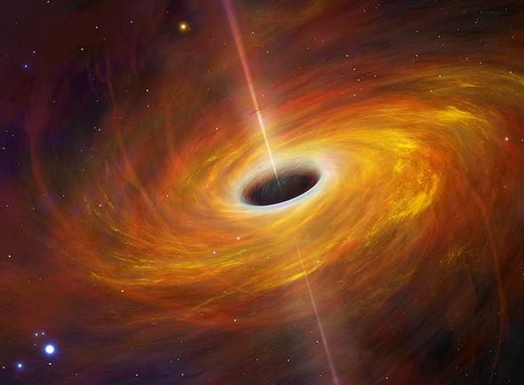
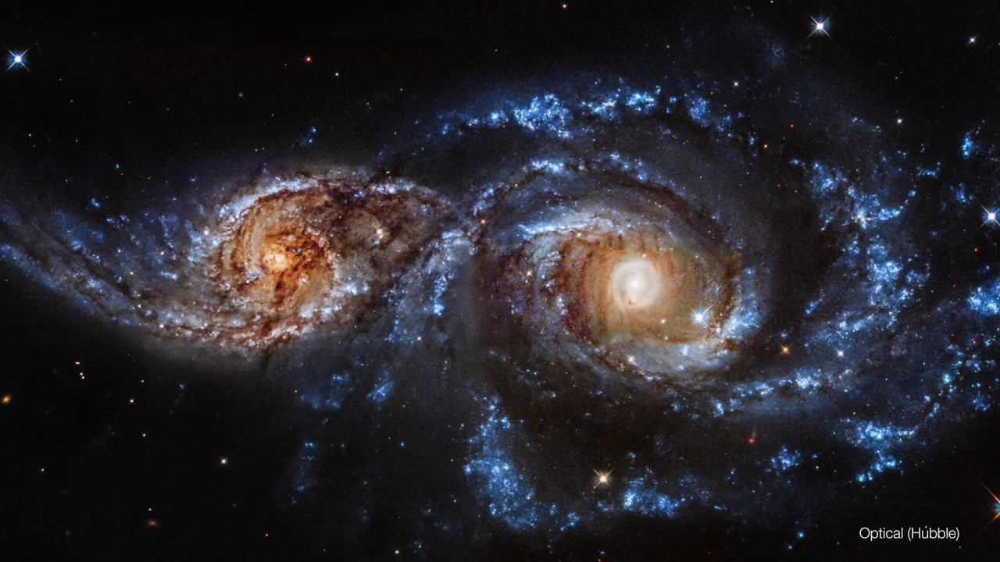

Índice
- Definição e exposição dos tipos de galáxias conhecidas
- O que é uma galáxia?
- Que tipos de galáxia existem?
- Constituição das galáxias e a importância dos buracos negros supermassivos
- Que elementos são habitualmente os principais constituintes das galáxias?
- O que existe no centro das galáxias?
- Colisões entre galáxias
- Bibliografia
Definição e exposição dos tipos de galáxias conhecidas
O que é uma galáxia?
Uma galáxia é um conjunto de estrelas, poeiras, gás interestrelar e matéria negra. Existam algumas galáxias conhecidas que sejam apenas compostas por alguns milhões de estrelas, sendo estas denominadas de galáxias anãs, porém uma grande parte das galáxias conhecidas, incluindo a nossa, são compostas por vários milhares de milhões de estrelas.
Que tipos de galáxia existem?
Existem 3 tipos principais de galáxias. São estes gláxias elípticas, irregulares e em espiral.
| Denominação | Imagem | Caraterísticas |
|---|---|---|
| Elípticas |  | Têm uma forma elíptica, tal como o nome sugere, tendendo a ser muito brilhantes perto do seu centro, devido à elevada concentração de estrelas. As maiores e mais velhas galáxias tendem a ser deste tipo. |
| Em Espiral |  | Estas galáxias possuem uma forma semelhante a um disco e tendem a ser galáxias de média dimensão. A Via Láctea é uma galáxia deste tipo. |
| Irregulares |  |
Estas galáxias não possuem nenhum padrão reconhecível. Normalmente estas tendem a ser as galáxias mais pequenas. |
Para consultar mais informação sobre estes tipos de galáxias clique aqui.
Constituição das galáxias e a importância dos buracos negros supermassivos
Que elementos são habitualmente os principais constituintes das galáxias?
A composição das nebulosas que constituem as galáxias obedecem quase todas às seguintes regras:
- Maioritariamente são compostas por Hidrogénio e Hélio, sendo a quantidade de Hidrogénio consideravelmente maior que a Hélio.
- Têm na sua constituição outros elementos em quantidades residuais.
Visto que, os elementos mais pesados são criados apenas em supernovas, ou nos interiores das estrelas supergigantes, é possivel concluir que as galáxias mais antigas são as que possuem quantidades ligeiramente maiores de elementos mais pesados.
Para consultar mais informação sobre a composição química, não só sobre galáxias, mas também sobre outros objetos constituintes do universo visivel clique aqui.
O que existe no centro das galáxias?
À medida que nos aproximamos do centro de uma galáxia mais densa esta fica, e maior a atração gravitacional para o seu centro. Isto deve-se à existência de um buraco negro no seu centro, no caso da Via Láctea o buraco negro é supermassivo devido ao tamanho da galáxia.
Estes buracos negros mantém as galáxias em sua órbita devido à sua enorme massa. A massa do buraco negro no centro da Via Láctea é de 4.31 * 10^6 massas solares.
O buraco negro referido anteriormente encontra-se, também, muito longe de ser um dos maiores de qual os astrónomos têm conhecimento. Grande parte dos maiores buracos do qual temos conhecimento são quasares. Eis uma lista com os 5 maiores conhecidos atualmente:
- TON 618
- 6.6 * 10^10 massas solares
- Holmberg 15A
- 4.0 * 10^10 massas solares
- IC 1101
- 4.0 * 10^10 massas solares
- S5 0014+81
- 4.0 * 10^10 massas solares
- SDSS J102325.31+514251.0
- 3.31 * 10^10 massas solares
Para consultar a lista na íntegra clique aqui.
Colisões entre galáxias
Devido ao constante movimento das galáxias e da sua normal concentração em clusters, colisões entre estas são comuns no universo. A própria Via Láctea irá colidir num futuro muito distante com a galáxia Andrómeda.
Porém, não é possível a nenhum ser humano observar uma colisão entre galáxias, devido primariamente ao facto de estas demorarem centenas de milhões de anos a ocorrer.
Apesar desta contrariedade, ao estudar o movimento das galáxias envolvidas na colisão, é possível determinar o comportamento futuro destas, observando-o em simulações.
Simulação da colisão entre a Via Láctea e a Andrómeda.